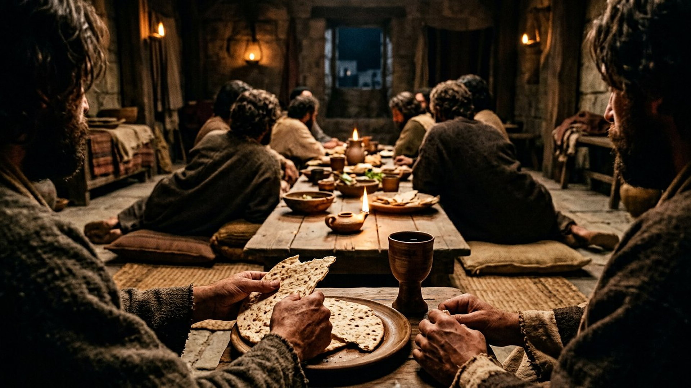
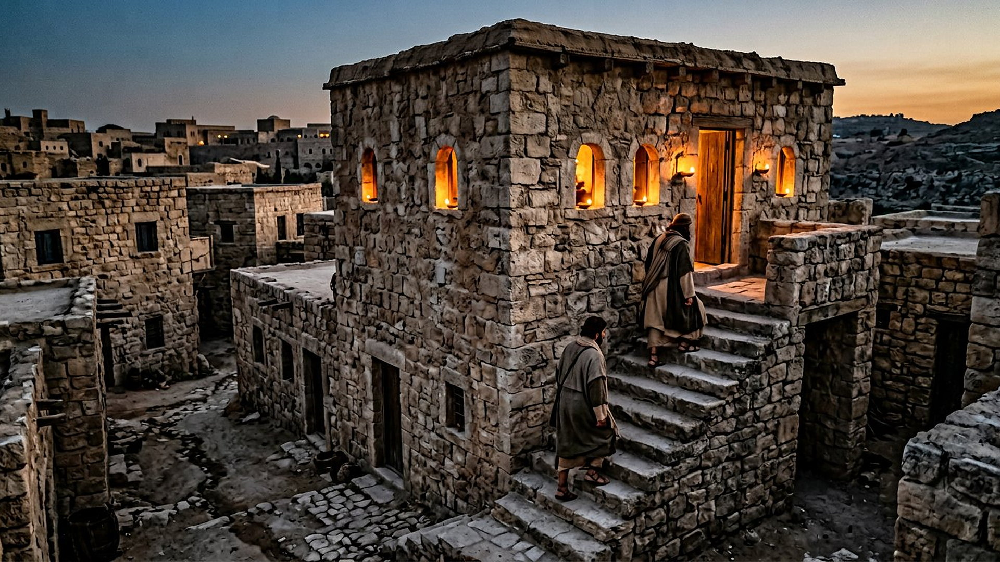
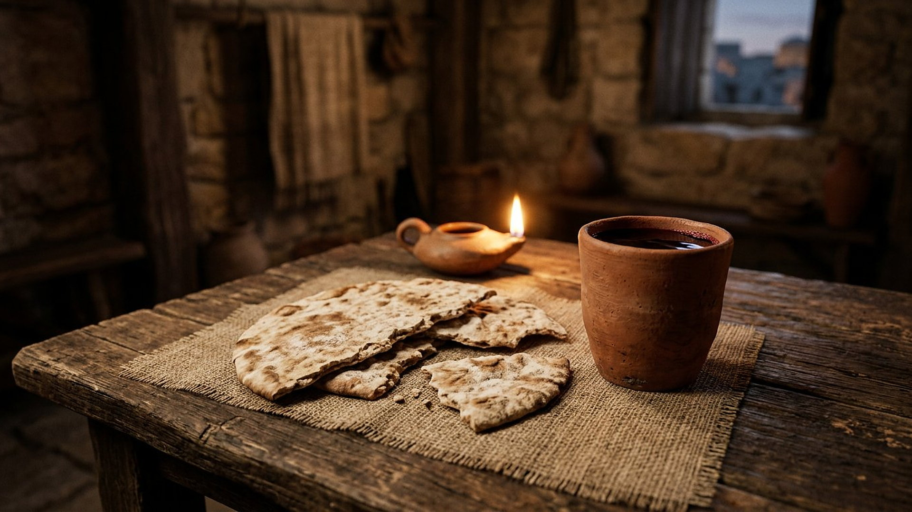

Salle 56 — Matthieu 26 ; Luc 22 ; 1 Corinthiens 11 ACCOMPLIE
La dernière Cène et le Mémorial
« Faites ceci en mémoire de moi. » — Luc 22:19 (d'après Segond 1910). « Toutes les fois que vous mangez ce pain et que vous buvez cette coupe, vous annoncez la mort du Maître, jusqu'à ce qu'il vienne. » — 1 Corinthiens 11:26 (traduction personnelle fidèle)
Reconstitution numérique — le pain rompu dans la chambre haute : aucun visage n'est montré de face, aucune auréole.
Après la Pâque, un repas nouveau
Le soir du 14 Nissan (translittération de l'hébreu : Nîsān, premier mois du calendrier juif), Jésus célèbre la Pâque avec ses douze apôtres dans une « grande chambre haute » préparée à Jérusalem. Au cours de cette nuit, il lave les pieds de ses disciples, annonce la trahison de Judas (translittération : Ioúdas), puis institue un repas nouveau : prenant du pain sans levain, il le rompt et dit « prenez, mangez ; ceci est mon corps » ; puis, prenant une coupe de vin, « buvez-en tous, car ceci est mon sang, le sang de l'alliance, qui est répandu pour plusieurs, pour le pardon des péchés » — ajoutant « faites ceci en mémoire de moi » et l'annonce qu'il ne boira plus du fruit de la vigne « jusqu'au jour où je le boirai nouveau avec vous dans le royaume de mon Père » (Matthieu 26:17-30 ; Luc 22:14-20 ; citations d'après Segond 1910, résumé sobre).
Dans la lecture retenue par ce musée, le Mémorial est la clé de voûte qui relie la première Pâque à la rançon : le pain rompu renvoie au corps donné (salle 44), le vin à l'alliance scellée dans le sang, et l'ordre de répéter le geste chaque année, à la date anniversaire, fait de chaque commémoration une proclamation « jusqu'à ce qu'il vienne » — annonce tournée vers le Royaume (salle 40). La chronologie exacte de la nuit, comparée entre les évangiles, et la question de la présence du Christ dans les emblèmes sont exposées ci-dessous en DÉBATTU, sans les dissimuler.
Le récit en cinq temps
De la chambre préparée aux psaumes chantés avant la sortie, avancez d'une station à l'autre.

Le banc des preuves : une chambre disputée, une chronologie débattue
DÉBATTU
Le Cénacle du mont Sion : une tradition médiévale sur un lieu plus ancien (EV-65)
Sur le mont Sion, la salle voûtée dite « Cénacle » (du latin : cenaculum, la salle à manger d'en haut) est vénérée depuis le Moyen Âge comme la chambre de la dernière Cène ; le bâtiment actuel, avec ses voûtes croisées, date en grande partie de l'époque des croisades et repose sur des vestiges plus anciens dont l'identification est discutée. Vérifié : la coutume d'un repas pascal pris dans une chambre haute louée correspond bien aux maisons de Jérusalem au Ier siècle. Débattu : que cette salle précise soit celle de Marc 14:15, et, plus largement, l'emplacement de la maison du dernier repas.
DÉBATTU
Un repas pascal, ou la veille ? Le débat des calendriers
Les évangiles synoptiques présentent le dernier repas comme le repas de la Pâque (Matthieu 26:17-19) ; Jean situe la mort de Jésus au moment où l'on mange encore la Pâque (Jean 18:28 ; 19:14), ce qui déplacerait le repas d'un jour. Les spécialistes débattent depuis des siècles : calendriers différents en usage à Jérusalem, lecture du vocabulaire de Jean, ou compte rendu concentré des synoptiques. La salle suit la présentation commune — le repas du 14 Nissan, la nuit même de la Pâque — et signale la discussion au lieu de la trancher.
DÉBATTU
Que sont le pain et la coupe ? Un débat entre chrétiens
« Ceci est mon corps » : les traditions chrétiennes lisent ces paroles diversement — présence réelle et transformation des éléments pour les uns, présence spirituelle pour d'autres, mémorial symbolique pour d'autres encore. Dans la lecture retenue par ce musée, le pain sans levain et le vin rouge sont des emblèmes : ils représentent le corps parfait donné et le sang de la nouvelle alliance, et le repas reste un repas de mémoire et d'annonce. La salle expose ce débat en le nommant comme tel, sans caricaturer aucune des lectures.
Quatre clés pour bien lire la dernière Cène
1. La Pâque accomplie devient un nouveau mémorial
Le repas nouveau naît à l'intérieur de l'ancien : même nuit du 14 Nissan, même pain sans levain que la sortie d'Égypte (salle 46), mais l'agneau pascal fait place, dans les paroles de Jésus, à son propre corps donné. Le Mémorial ne supprime pas la Pâque comme on rature une page : il la relit comme une annonce dont la salle 44 exposera le prix — « Christ, notre Pâque, a été immolé » (1 Corinthiens 5:7).
2. Une alliance dans une coupe
Au Sinaï, l'alliance avait été scellée par le sang aspergé sur l'autel et le peuple (salle 47 ; Exode 24:8). Ici, la « nouvelle alliance » annoncée par Jérémie (translittération : Yirmĕyāh ; Jérémie 31:31) est associée à une coupe bue ensemble : le sang n'est plus versé sur les convives, il est — en emblème — partagé par eux. La lecture du musée suit ce fil : du Sinaï à la chambre haute, c'est la forme de la fidélité qui se rapproche, jusqu'à la table.
3. Un ordre de mémoire, tourné vers l'avenir
« Faites ceci en mémoire de moi » est l'un des très rares rites ordonnés par Jésus lui-même, et Paul le transmet comme reçu : une commémoration annuelle, à la date anniversaire, qui « annonce la mort du Seigneur jusqu'à ce qu'il vienne » (1 Corinthiens 11:23-26). Le repas regarde donc dans les deux directions : en arrière vers le poteau, en avant vers le Royaume de la salle 40, où la coupe sera bue « nouvelle ».
4. Les pieds lavés avant le pain rompu
Jean ne raconte pas l'institution du pain et de la coupe, mais il occupe la même nuit par le lavement des pieds : le maître prend un linge, verse l'eau et lave les pieds de ceux qui allaient le renier, le trahir ou s'enfuir. « Je vous ai donné un exemple » (Jean 13:15). La salle tient les deux récits ensemble : le service le plus bas précède le don le plus grand, et l'un explique l'autre — celui qui se donne se fait d'abord serviteur (salle 53, clé 2).
Prescience n'est pas fatalité — une table où chacun reste
À cette table, Jésus dit tout ce qui va suivre — la trahison, la dispersion, le reniement de Pierre — et ne renvoie personne : Judas reçoit la bouchée, Pierre la promesse de son retour, tous la coupe. L'annonce de la nuit ne ferme aucune chaise ; elle éclaire des convives qui resteront libres de fuir ou de revenir, exactement comme Pierre le fera (salle 55).

Salle 46 : la Pâque dont ce repas hérite · Salle 44 : le corps et le sang que les emblèmes annoncent · Salle 54 : la nuit continue au jardin
Écouter la salle
Transcription de la narration
Bienvenue dans cette nouvelle salle. Vous verrez d'abord une maison de Pierre au crépuscule, avec un escalier extérieur menant à une grande chambre éclairée, puis une longue table basse autour de laquelle des convives partagent un repas du soir. Bonne visite. La visite avance en cinq étapes courtes. Prenez le temps d'observer chaque image et de lire les panneaux : ils présentent du pain plat et une coupe, une chambre célèbre de Jérusalem, et les questions que les spécialistes débattent encore. Merci de votre attention.